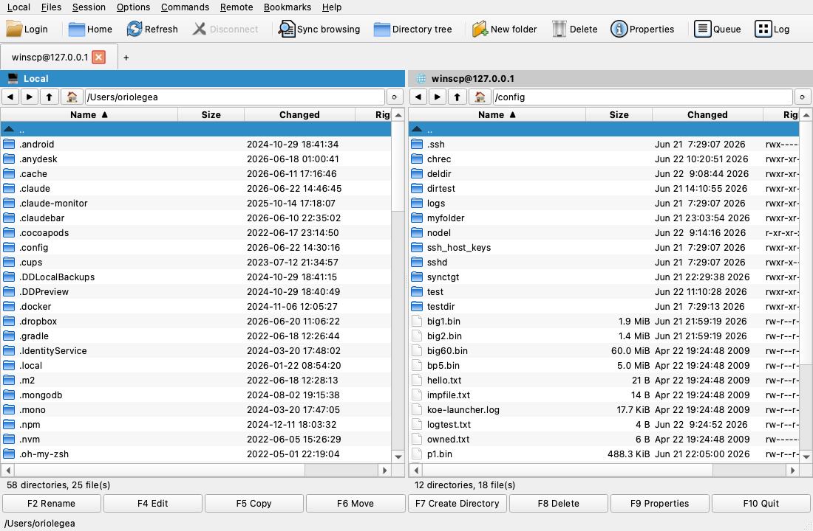

WinSCP. Natively on Mac & Linux.
The dual-pane file manager people have loved on Windows for 20 years — SFTP, FTP, SCP, WebDAV and S3 — now running natively on macOS and Linux. Free and open source.
Download for Linuxx86-64 or ARM64 · AppImage
100% free · open source · no account, no telemetry · all downloads

Everything you reach for.
A faithful rebuild of the WinSCP Commander, running the same protocol engine natively.
Transfer queue
Background transfers with a live queue, speed and parallel connections.
Dual-pane Commander
Two panels, session tabs, a directory tree and synchronized browsing — the layout you know.
Secure
Public-key auth (your OpenSSH keys work), host-key verification, and a notarized, signed app.
Edit remote files
Open a remote file in any editor; FreeSCP watches it and re-uploads automatically when you save.
Five protocols
SFTP, SCP, FTP, WebDAV and S3, with TLS. Connect, browse, transfer and manage files.
Drag & drop
Between panels and to/from Finder. Bookmarks, masks, overwrite prompts, recursive chmod.
Connected in three steps.
No installer, no account, nothing to configure first.
Download
Grab the build for your computer. On macOS unzip it and drag FreeSCP to Applications; on Linux make the AppImage executable with chmod +x.
Log in
Pick the protocol — SFTP, SCP, FTP, WebDAV or S3 — and enter host, user and password, or choose your SSH key. Your OpenSSH keys work as they are.
Transfer
Your files on the left, the server on the right. Drag between panels or press F5 to copy. Edit remote files in place; they upload when you save.
Same engine.
Zero emulation.
WinSCP has been a fantastic, free tool on Windows for many years — but it never existed on macOS or Linux, and nothing else quite replaces it. FreeSCP closes that gap: it runs WinSCP's own protocol engine, recompiled natively, behind a Qt rebuild of its interface. So transfers behave exactly like WinSCP, on your Mac.
It's free software under the GPLv3, a project started by Oriol Egea, made possible by leaning on AI for the heavy lifting of the port.
Pick your platform.
Version 0.2 — the same app everywhere, built from the same source.
macOS
Apple Silicon & Intel — one universal app
- macOS 12 Monterey or newer
- Signed & notarized by Apple
- Unzip, drag to Applications
Linux
x86-64 — Intel / AMD
- Any distro with glibc 2.35+
(Ubuntu 22.04, Debian 12, Fedora 36…) - Single file, nothing to install
chmod +x, then run it
Linux
ARM64 — aarch64
- ARM laptops, servers, Raspberry Pi 4/5 (64-bit OS)
- Same glibc 2.35+ requirement
chmod +x, then run it
On Windows? Use the original WinSCP. · All releases & changelog · Build from source
Free. Open. Private.
No catch and no asterisk — this is the whole business model.
Every feature, for everyone, forever. No paid tier, no trial, no ads, no account.
GPLv3. Read it, build it, change it — the code is on GitHub.
FreeSCP never phones home: no tracking, no usage data, no update pings. It only talks to the servers you connect to.
FreeSCP is built in spare time. If it saves you time and you want to help its development, a coffee on Ko-fi goes a long way. Entirely optional — the app is the same either way.
Good questions.
Is this the real WinSCP?
It runs WinSCP's real protocol engine — the same open-source code, recompiled for macOS and Linux — behind an interface rebuilt in Qt. It is an independent community port, not made or endorsed by the WinSCP team. On Windows, use the original WinSCP.
Is it really free? What's the catch?
There isn't one. It is GPLv3 open-source software with no paid version, no ads and no account. If you want to support the work you can buy me a coffee, but nothing is locked behind it.
Does it collect any data?
No. FreeSCP has no telemetry, analytics or crash reporting and does not check for updates on its own. The only network connections it makes are to the servers you tell it to connect to. Settings and cached host keys stay on your computer.
Which Macs are supported?
Any Mac running macOS 12 Monterey or newer, Apple Silicon or Intel — it is a single universal app. It is signed with a Developer ID and notarized by Apple, so it opens without security warnings.
The AppImage does not start on my Linux.
Make it executable first (chmod +x FreeSCP-Linux-*.AppImage). AppImages need FUSE 2; if your distro does not ship it, install libfuse2 or run it with --appimage-extract-and-run. It needs glibc 2.35 or newer and an X11 or XWayland session.
Which features of WinSCP are there?
The Commander: dual panels, session tabs, directory tree, SFTP / SCP / FTP(S) / WebDAV / S3, public-key authentication, the transfer queue with parallel connections, remote editing, synchronized browsing, bookmarks, drag & drop. Scripting, the Explorer-style interface and some advanced site settings are not there yet — see the roadmap.
I found a bug or miss a feature.
Please open an issue on GitHub — with the protocol and server type if it is a connection problem. Pull requests are welcome too.
Ready when you are.
Download FreeSCP and connect to your first server in under a minute.